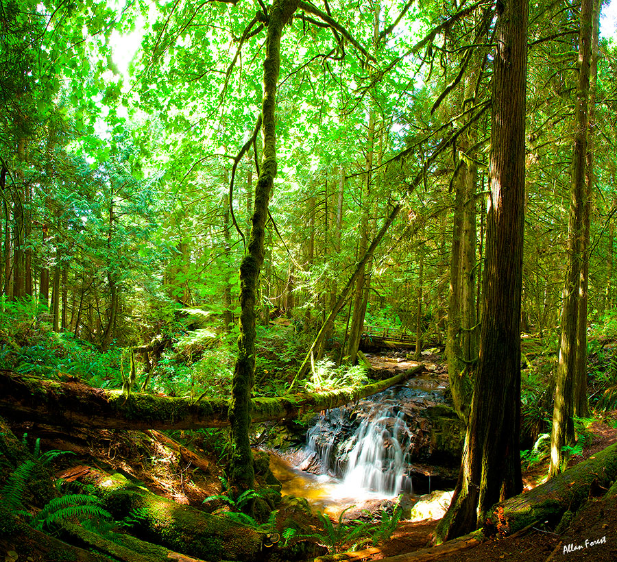

Contents
Introduction
A protected area is a clearly defined geographical space, recognised, dedicated and managed, through legal or other effective means, to achieve the long term conservation of nature with associated ecosystem services and cultural values. (IUCN Definition 2008)These are locations which receive protection because of their recognized natural, ecological or cultural values. There are several kinds of protected areas, which vary by level of protection depending on the enabling laws of each country or the regulations of the international organizations involved. Generally speaking though, protected areas are understood to be those in which human presence or at least the exploitation of natural resources (e.g. firewood, non-timber forest products, water, ...) is limited.(Wikipedia)
Importance of Protected Areas
Protected areas are important for conserving sites of (indigenous) cultural importance and considerable reserves of natural resources such as;
Carbon stocks:
Carbon emissions from deforestation account for an estimated 20% of global carbon emissions, so in protecting the worlds carbon stocks greenhouse gas emissions are reduced and longterm land cover change is prevented, which is an effective strategy in the struggle against global warming. Of all global terrestrial carbon stock, 15.2% is contained within protected areas. Protected areas in South America hold 27% of the world's carbon stock, which is the highest percentage of any country in both absolute terms and as a proportion of the total stock.
Rainforests:
18.8% of the world's forest is covered by protected areas and sixteen of the twenty forest types have 10% or more protected area coverage. Of the 670 ecoregions with forest cover, 54% have 10% or more of their forest cover protected under IUCN Categories I – VI.